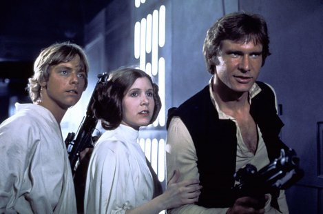
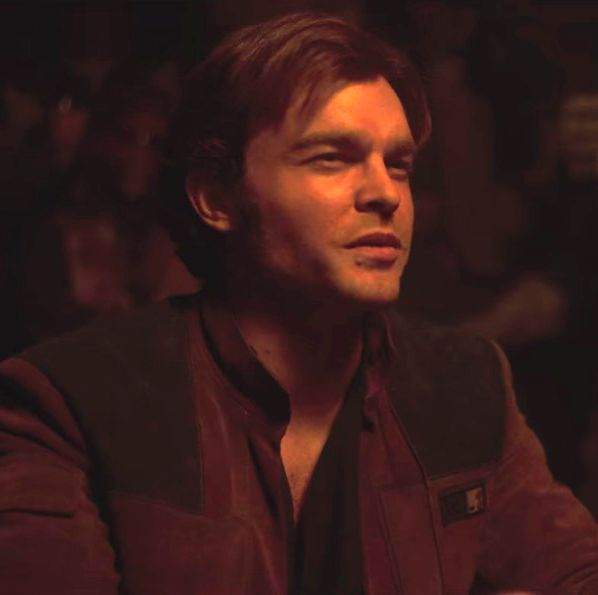

Star Wars
Bemutatkozás

A filmet 1977. május 25-én mutatták be a mozikban, ahol néhány hét alatt a filmtörténelem egyik legsikeresebb alkotása lett több mint 798 millió dolláros bevétellel világszerte. Ekkor még szimplán Csillagok háborúja volt a címe (ahogyan a regényváltozatnak is), valószínűleg a forgalmazó nyomására, arra az esetre készülve, ha a film megbukna és nem tudnák elkészíteni a Lucas által eleve tervbe vett folytatásokat. A siker hatására a nyolcvanas évek elejétől már a Lucas által tervezett epizódokra utaló címekkel vetítették. Szerepel az 1001 film, amit látnod kell, mielőtt meghalsz című könyvben.
Történet
Réges régen, egy távoli galaxisban kezdődött a nagy kaland, amikor Leia Organa hercegnő (Carrie Fisher) két fura robottal egy alig értékelhető hologramot küldött az egyetlen Jedi lovagnak, a remeteként élő Ben Kenobinak (Alec Guinness). Az idős jedi Luke Skywalker (Mark Hamill), Han Solo (Harrison Ford) és szőrős vukija, a hatalmas Chewbacca társaságában útra kel, hogy kiszabadítsa a hercegnőt Darth Vader fogságából, és győzelemre vigye az igaz ügyet az egész Galaxisban.
Folytatás
Az első filmet két sikeres folytatás követte, az 1980-ban bemutatott A Birodalom visszavág, illetve az 1983-as A Jedi visszatér, ez a három film alkotja az eredeti Star Wars trilógiát. Az eredeti trilógiát 1999 és 2005 között egy előzmény trilógia követte, amely megosztó reakciókat váltott ki mind a rajongókból, mind a kritikusokból. 2015-ben A Jedi visszatér eseményei után játszódó újabb trilógia vette kezdetét Az ébredő Erő című epizóddal. Az első nyolc film több Oscar-díj jelölést is kapott, ám díjat csak az első két film nyert. A filmek hatalmas sikernek bizonyultak, az összes bemutatott film együttvéve 8,5 milliárd dollár bevételt termelt a mozik kasszáinál, ezzel a Star Wars második legjövedelmezőbb filmsorozat a Marvel Cinematic Universe filmjei mögött. Eddig két antológia film készült el, ezek a Zsivány Egyes (2016) és a Solo: Egy Star Wars-történet (2018).
| Film | Eredeti bemutató | Rendező | Forgatókönyvíró(k) | Történet | Producer(ek) |
|---|---|---|---|---|---|
| IV. rész - Egy új remény | 1977. május 25. | George Lucas | George Lucas | George Lucas | Gary Kurtz |
| V. rész - A Birodalom visszavág | 1980. május 21. | Irvin Kershner | Leigh Brackett & Lawrence Kasdan | George Lucas | Gary Kurtz |
| VI. rész - A Jedi visszatér | 1983. május 25. | Richard Marquand | Lawrence Kasdan & George Lucas | George Lucas | Howard Kazanjian |